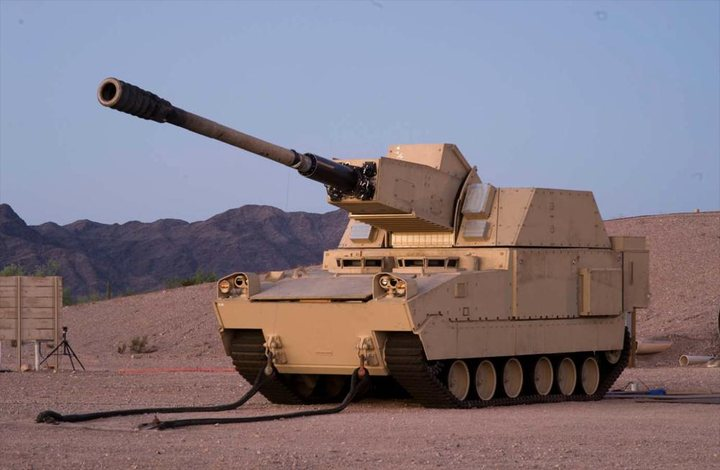

Enterprise AI, stood up in weeks
Launched shAIne, an enterprise AI platform, in the first month, with an auditable value model: $53K–$73K documented cost avoidance and 77.4% weekly adoption across every seat.
Dr. Shane Turner · Defense Growth & Solutions Executive
I turn operational, test, and training data into wins, fielded capability, and measurable ROI. 20+ years across Navy, Army, Air Force, Space, and USMC programs, leading cleared teams and standing up enterprise AI for Layered Defense, Autonomous Warfare, and Integrated Fires.
Most recently stood up shAIne, an enterprise AI platform, in its first month with measured, auditable ROI.
Solutions rated a Strength by government evaluators.
Government source-selection evaluation
Defense growth and solutions executive with 20+ years across Navy, Army, Air Force, Space, and USMC programs. Progressed from hands-on technical integration to $896M program execution, $1B+ in contract wins, and enterprise solutions and AI strategy. Builds the data, evidence, and AI capability that turns operational, test, and training data into decision-grade insight for Layered Defense, Autonomous Warfare, and Integrated Fires.
Known for leading cleared technical teams, standing up enterprise AI programs with measured cost avoidance and ROI, modernizing live and virtual training ranges, and translating EW, C-UAS, directed energy, and multi-domain T&E into customer-facing mission solutions.
Launched shAIne, an enterprise AI platform, in the first month, with an auditable value model: $53K–$73K documented cost avoidance and 77.4% weekly adoption across every seat.
Solution architecture, win themes, and capture strategy that landed strategic pursuits across Navy, Army, Air Force, and USMC programs.
Directed a Navy training enterprise across the western United States, integrating ranges and reengineering processes to lift cost performance.
Astrion's highest company-level recognition for Strategic Excellence in Innovative Solutions.
Layered Defense, Autonomous Warfare & Integrated Fires Division
Promoted from Vice President, Multi-Domain Test & Evaluation.
Promoted from Director, Program Management after two months.

Let's talk
Open to executive and senior leadership conversations across defense growth, solutions, and AI. The fastest way to reach me: